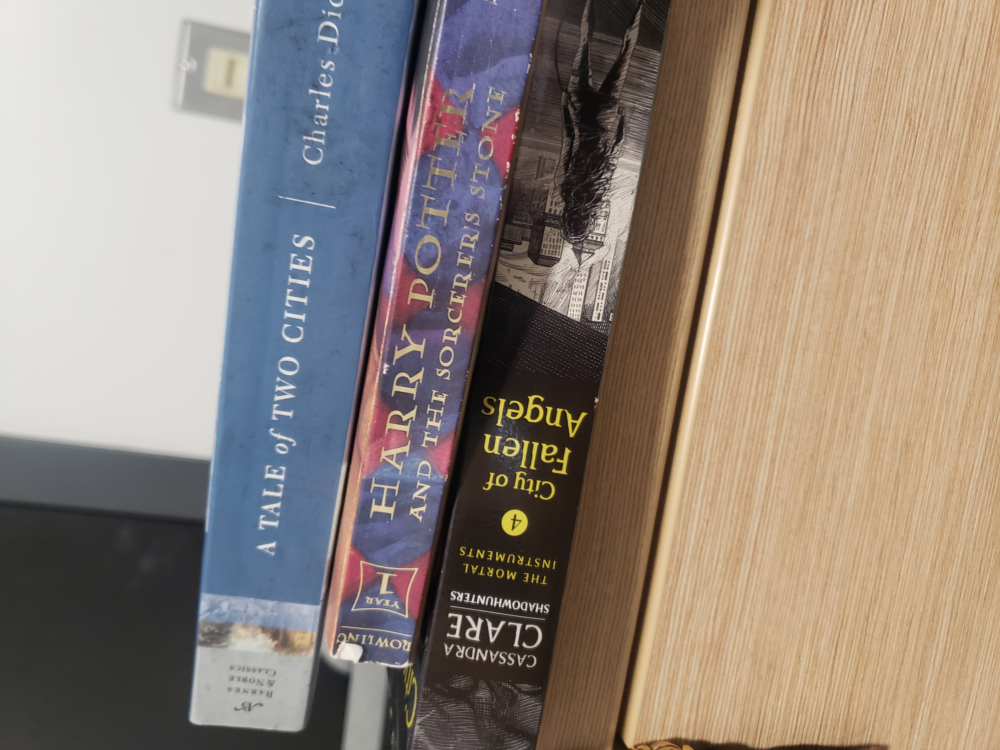

I used to read a lot of books when I was younger and quaratine gave me the time to get back into the habbit. I read the Six of Crows series, started to reread the Shadowhunter series, and aslo started to read the Bridgerton series. I plan to read the Witcher books next.